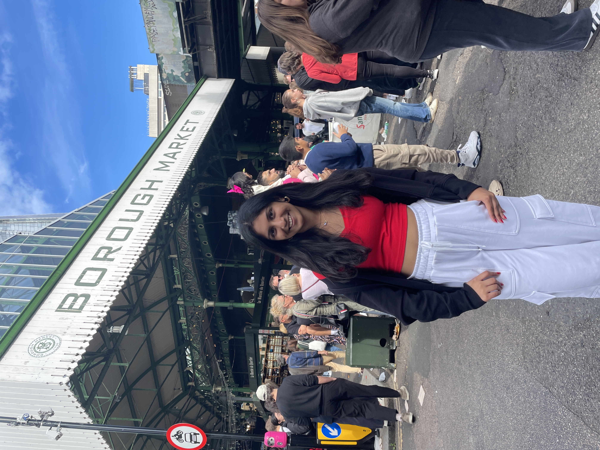

“The important thing is not to stop questioning. Curiosity has its own reason for existence. One cannot help but be in awe when he contemplates the mysteries of eternity, of life, of the marvelous structure of reality. It is enough if one tries merely to comprehend a little of this mystery each day." - Albert Einstein
Hi! My name is Pragathi Akula, a first-year undergraduate student at the University of North Carolina at Chapel Hill. I am looking to major in Biostatistics through the Gillings School of Global Public Health with a minor in Medicine, Literature, and Culture. I am passionate about the application of statistical methods to biological data as a means of identifying trends and implications of medical treatments, such as neurodegenerative therapies. As such, my long-term goal is to become a physician/researcher continuously discovering ways to improve patient experiences and outcomes.
I am currently exploring my interests within the vast field of healthcare, specifically working with children and young adults in clinical settings. Thus, I earned my EMT Basic certification and intend to serve my local community through shifts with local EMS agencies. Additionally, I recently started shadowing professionals at UNC Hospitals in fields spanning from nursing to cardiology, overseeing day-to-day responsibilities and routine surgical procedures. This experience has heightened my curiosity for the variety of healthcare professions and their unique contributions.